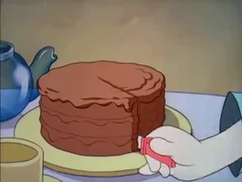

“I’m not saying I don’t enjoy the days that I’m not eating chocolate cake. But I do particularly like those days when I am eating chocolate cake.”—Trisha Yearwood
Chocolate Cake

The undeniable queen of cakes. There is no debate.
When in doubt, chocolate. For everything.
INGRIDIENTS:
- All-purpose Flour
- Sugar
- Unsweetened cocoa powder and espresso powder
- Baking powder, Baking soda, salt
- Oil
- Eggs
- Vanilla Extract
INSTURCTIONS:
- Preheat the oven and grease two pans
- Whisk dry ingredients
- Bake the cake for 30 min
- Prepare the frost
- Once cold, frost the cake
If you want to eat this cake do not tell friends nor family, as they won't leave you a piece.